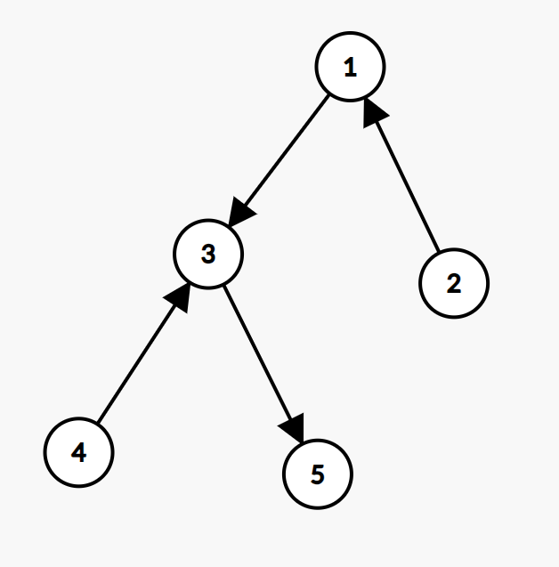
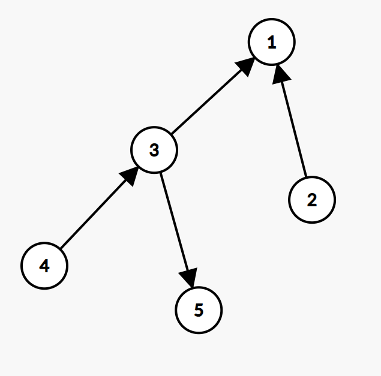

BigC's flagship software product is divided into $$$n$$$ distinct modules, numbered $$$1$$$ through $$$n$$$, each assigned to a dedicated team. To streamline development, the company maintains a centralized workflow network of $$$n - 1$$$ dependency relations between these modules, forming an underlying weakly directed connected graph.
Each relation between module $$$u$$$ and module $$$v$$$ carries a status indicator $$$w \in \{0, 1, 2\}$$$ set by the engineering board:
A schedule is a full linear execution order of all modules, represented as a permutation of $$$(1, 2, \dots, n)$$$. The schedule is satisfied if for every pair ($$$u, v$$$), and $$$u$$$ must be completed before $$$v$$$, $$$u$$$ must be placed after $$$v$$$ in the permutation. For every flexible relation ($$$w = 0$$$), the manager must commit to exactly one of the two valid directional choices.
To assess company policy flexibility, the CEO wants to compute the total number of valid execution schedules, summed over all possible directional assignments of the flexible dependencies. Because the result can be extremely large, output it modulo $$$998\,244\,353$$$.
The first line contains a single integer $$$n$$$ ($$$1 \le n \le 4000$$$) — the number of modules.
Each of the next $$$n - 1$$$ lines contains three integers $$$u$$$, $$$v$$$, and $$$w$$$ ($$$1 \le u, v \le n$$$, $$$w \in \{0, 1, 2\}$$$), describing a relation of type $$$w$$$ between modules $$$u$$$ and $$$v$$$. The given relations are guaranteed to form a weakly connected graph.
Print a single integer — the total number of valid execution schedules summed over all possible orientation choices for flexible relations, modulo $$$998\,244\,353$$$.
51 2 21 3 03 5 13 4 2
10
There are two possible configurations of those dependency relations.

A total of $$$3$$$ valid execution schedules can be generated from this configuration:
[2, 1, 4, 3, 5]
[2, 4, 1, 3, 5]
[4, 2, 1, 3, 5]

There are $$$7$$$ valid execution schedules satisfying the dependency relations in this configuration:
[2, 4, 3, 1, 5]
[2, 4, 3, 5, 1]
[4, 2, 3, 1, 5]
[4, 2, 3, 5, 1]
[4, 3, 2, 1, 5]
[4, 3, 2, 5, 1]
[4, 3, 5, 2, 1]
Summing all valid execution orders across both direction assignments yields $$$3 + 7 = 10$$$.